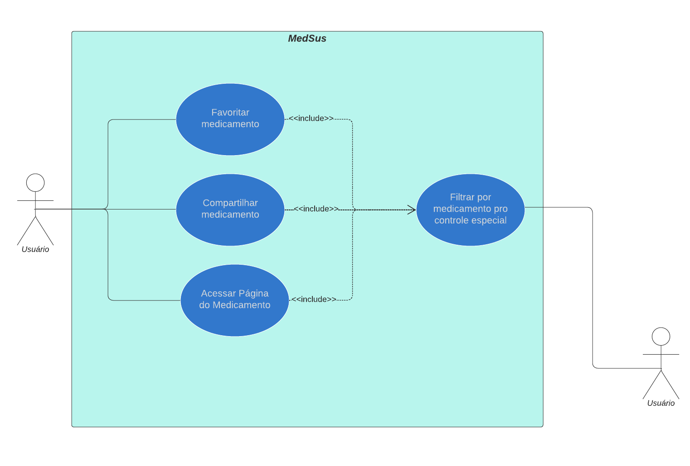
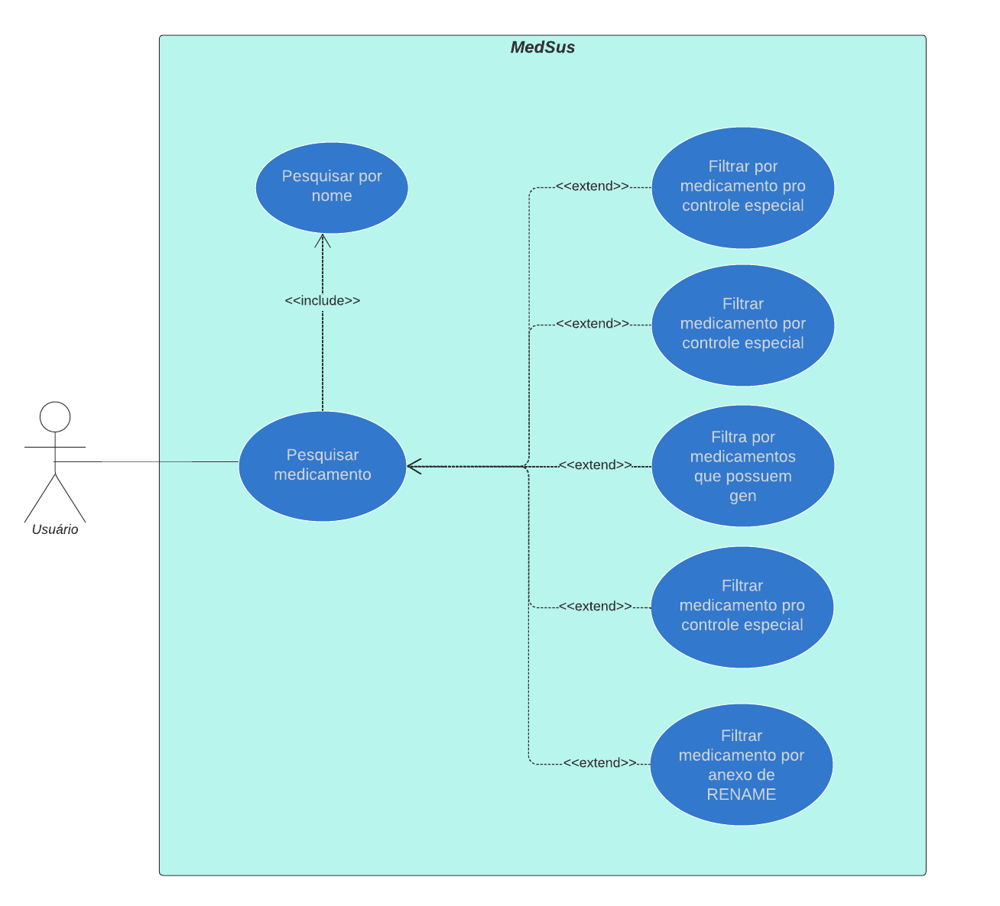
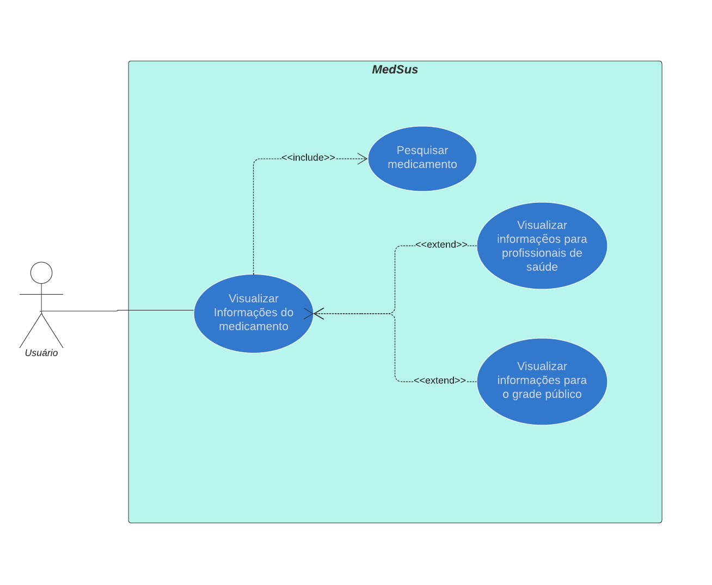
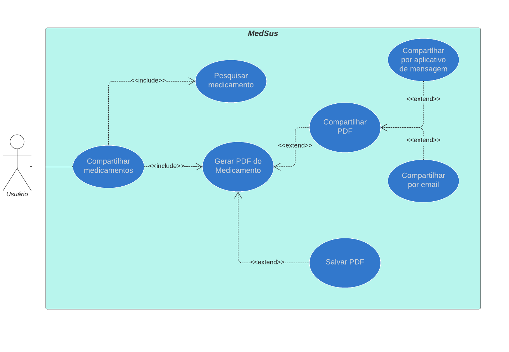

Caso de Uso
1. Introdução
A modelagem de caso de uso é uma abstração do sistema baseado em ações do usuário, ou seja, mostra como o sistema deve se comportar frente a um determinado conjunto de ações. Deste modo, os casos de uso têm como objetivo, não só ajudar a extrair os requisitos, como também documentar o sistema. Isso significa, que durante o processo de elicitação essa modelagem pode ser usada com foco de discussão com os stakeholders, desta forma, deve possuir uma linguagem simples, natural e intuitiva. Além disso, durante a fase de projeto, são usados para descrever o sistema para os engenheiros que o implementam.
2. Metodologia
Para a criação desse artefato escolheu-se a abordagem tradicional, ou seja, representar os casos de uso através um diagrama UML. A ferramenta escolhida para criar essa representação foi o Lucidchart. Além disso, teve-se como referência o resultado da elicitação e os cenários para a criação desse artefato.
2.1 Template
UCxx - título
| UC00 | Descrição |
|---|---|
| Descrição | Uma breve descrição |
| Ator | São entidades externas ao sistema que participam de um ou mais casos de uso normalmente ou fornecem eventos de entrada ou recebem alguma resposta do sistema. |
| Pré-condições | é o estado do sistema e de seus arredores que é necessário para que o caso de uso possa ser iniciado |
| Fluxo Principal | descreve a funcionalidade principal do caso de uso, quando nenhum desvio é tomado |
| Fluxo Alternativo | especificam interações alternativas com a mesma meta. |
| Pós-condições | As Pós-Condições são os estados que o sistema pode ficar depois do caso de uso terminar |
| Rastreabilidade | rastreabilidade dos requisitos |
2.2 Legenda dos Relacionamentos
Na UML, relacionamentos identificam as ligações semânticas que existem entre elementos de modelo.
| relacionamentos | descrição |
|---|---|
| Associação | Uma linha sólida não orientada entre atores e casos de uso. Demonstra que o Ator utiliza a função do sistema representada pelo Caso de Uso. |
| << include >> | permitir a reutilização de um determinado comportamento de um caso de uso por outros casos de uso, funções com relacionamento include sempre são executadas. |
| << extend >> | Um relacionamento de extend é usado para mostrar um comportamento opcional, comportamento que somente é executado sob determinadas condições. |
3. Casos de Uso
UC00 - Caso de Uso Geral

Figura 1: Caso de Uso Geral
Fonte: Autor
UC01 - Pesquisa de Medicamento

Figura 2: Pesquisar Medicamento
Fonte: Autor
| UC01 | Descrição |
|---|---|
| Descrição | O usuário pesquisa por um medicamento |
| Ator | todos |
| Pré-condições | Celular com acesso à internet e com o aplicativo instalado |
| Fluxo Principal | > O usuário entra na secção de pesquisa > Seleciona ou não alguns filtros para a sua pesquisa > Digita um nome de medicamento > Confirma a pesquisa |
| Fluxo Alternativo | Caso nenhum remédio seja encontrado o sistema avisa que a busca não obteve resultado |
| Pós-condições | O aplicativo continua na tela de pesquisa ou entra na página de um medicamento se algum for selecionado |
| Rastreabilidade | ST04 ST09 IR9 |
UC02 - Visualizar Medicamento

Figura 3: Visualizar Medicamento
Fonte: Autor
| UC02 | Descrição |
|---|---|
| Descrição | O usuário escolhe as informações que deseja visualizar |
| Ator | todos |
| Pré-condições | Pesquisar o medicamento |
| Fluxo Principal | > Entrar na página do medicamento > escolher o tipo de informação (para leigos ou para usuários avançados) |
| Fluxo Alternativo | não se aplica |
| Pós-condições | O aplicativo continua na página de visualização do medicamento |
| Rastreabilidade | ST12 IR1 ST11 |
UC03 - Compartilhar Medicamento

Figura 4: Compartilhar Medicamento
Fonte: Autor
| UC03 | Descrição |
|---|---|
| Descrição | O usuário compartilha um medicamento em formato PDF |
| Ator | todos |
| Pré-condições | Pesquisar o medicamento |
| Fluxo Principal | > Entrar na página do medicamento > Escolher um aplicativo para exportar o PDF |
| Fluxo Alternativo | não se aplica |
| Pós-condições | O aplicativo continua na página de visualização do medicamento |
| Rastreabilidade | ST08 ST09 |
Referências bibliográficas
CASO de Uso. [S. l.], 2021. Disponível em: https://www.cin.ufpe.br/~rls2/processo_tg/Metodologia%20S&B/guidances/concepts/use_case_8F95459C.html#:~:text=Uma%20precondi%C3%A7%C3%A3o%20%C3%A9%20o%20estado,do%20caso%20de%20uso%20terminar. Acesso em: 3 abr. 2022.
ESPECIFICANDO Relacionamentos em Diagramas. [S. l.], 2021. Disponível em: https://www.ibm.com/docs/pt-br/rsm/7.5.0?topic=diagrams-specifying-relationships-in. Acesso em: 3 abr. 2022.
DIAGRAMA de caso de uso UML: O que é, como fazer e exemplos. [S. l.], 2021. Disponível em: https://www.ibm.com/docs/pt-br/rsm/7.5.0?topic=diagrams-specifying-relationships-in. Acesso em: 3 abr. 2022.
Histórico de versões
| Versão | Data | Alteração | Responsável | Revisão |
|---|---|---|---|---|
| 0.0.1 | 05/03/22 | Criação | Gabriel Costa | João Durso |
| 0.0.2 | 03/04/22 | Verificação | Gabriel Costa | João Durso |
| 0.0.3 | 19/04/22 | Correção textual | João Durso | Gabriel Costa |